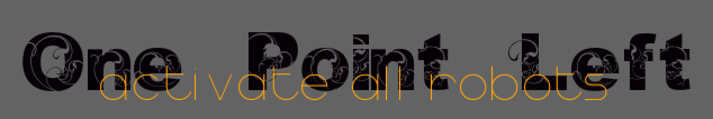

Change History
| Version | Who | What | When |
|---|---|---|---|
| 0.1 | Orhan Küçükyılmaz (OK) | Initial Document | 17.04.2014 |
| 0.2 | Orhan Küçükyılmaz (OK) | Updated Image | 08.07.2015 |
Abstract
a jump'n'shoot riddle game
After the Hero’s attack, it’s your duty to…
activate all robots!
Every 'activation-shoot' costs you points.
For every robot, machine or trap you activate,
you get points.
If you get hit, you lose a point.
If you have only one point left
than you have only one ONE shoot to make points or it’s …
… GAME OVER!

Levels, Robots, and more
In this Section it’s all about the levels the robots and more.
Level 0 - The Start/Menu level
Most games don’t have a playable menu level. What is a playable menu level?, you ask. Good question very good question indeed.
What is a menu?
Before a person can start a game he usually select from a menu what he wants to do. The menu is usually something like:
- Start
- Options
- …(something something)
Here the controls are different to the controls in the game.
Up and down on a joy-pad, joystick or on a keyboard (sometimes “w” for up and “s” for down) toggle between the menu items. With one button on the joy-pad, joystick or keyboard (sometime space or enter) the user select what he wants to do.
In this game the menu is a playable level. Why?
So the user uses the actual controls of the game and not some extra controls
for the menu. So he can learn the controls for the game early.
Level 0 teaches the player how to play the game, and presents him the first robot to activate.
But first let us take a look at the elements of the first level:
